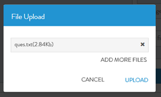

- Once a Grid FS is selected, we can find Add File(s) link on right side
- Click on Add File(s). �See Figure below.
An upload dialog box displays.�
- In the Upload dialog box, click on + icon to select the files to be uploaded.

- Once files are selected, Click Upload. See Figure below.
- Click Close once you are done. See figure below.
The system displays confirmation message on the File Upload dialog box.
 You can cancel a specific file before starting upload by clicking Cancel.
You can cancel a specific file before starting upload by clicking Cancel.